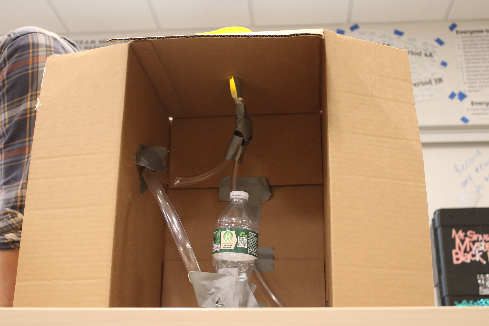

<!DOCTYPE html>


<html lang=en>
  
    <head>
    

        <meta charset="UTF-8"> 

        <meta name="viewport" content="width=device-width, initial-scale=1.0">
        

        <meta name="Marvelous K" content="Marvelous">

        <title>Marvelous' Black Box </title>
        

        <link rel="stylesheet" href="/style.css">

        <link rel="icon" type="image/x-icon" href="/images/favicon.png">
  

     </body>
</html>
<h1>Mystery Black Box Investigation</h1>
<p>In my 9th grade media and tech class in ESUMS we were challenged to figure out what was in a mystery black box that dropped different amounts of water every time we poured the same amount in. The black box was built by our teacher 16 years ago meaning it was older than every student in the classroom. We were tasked to figure out what was in the black box and to create our own version of the black box without ever seeing what was in the actual black box. The black box includes tubes that connect to each other, tape, a box and a faucet that allows all the getting poured to come out.</p>
<h4>CLAIM</h4>
<p>The black box includes tubes that connect to each other, tape, a box and a faucet that allows all the water getting poured to come out.</p> 
<p>When trying to figure out how the mystery black box works me and my group members analyzed the ways it worked and things used to create it. In the tests and observations we saw that sometimes when we poured an amount of water it would drop less water than at the start. When building our models of the Black box we tried to make our creation as similar as possible to the real black box. We first used tape to connect a funnel to the box then added a faucet connected to a lot of tubes, when the water was poured it would go through the connected tubes then come out through the faucet. The key structures of our model were a box, funnel and tubes. The function of the box was to hold everything we built in place, The function of the funnel was to have something to pour the water in, and finally the function of the tubes were to hold the water inside the box so it can be exited out by the faucet, We tested our model by adding an amount of water in the funnel and seeing if the amount that came out stayed the same, increased or decreased. Our first attempts failed so we had to reconstruct but after that we noticed that the amount of water decreased by a significant amount, like when we added 100ml of water none came out. The strengths to our model was the look, it looked very similar to the real black box from the outside. Our limitations were the way it worked and the amount of malfunctions. When we poured water through the funnel the water did not come out and the box malfunctioned a lot. The materials inside the real black box are most likely tubes that connect to each other, tape, a box, and a faucet because in our design we used those materials and got the black box to look very similar and perform pretty decently like the real black box. This shows why this model could be a possibility of what is in the actual black box because it works similarly like the black box and looks very identical to the real mystery black box. Some people think not all the materials stated is needed to create the black box but If the black box did not have tubes, a funnel, tape, and a faucet it would not look like the black box nor would it even work at all because without the funnel there is nowhere to pour the water making it impossible to get the water into the tubes, The funnel also has to be included because it's the only material other than the box that is visible without opening the box, The tubes have to be included because without the tubes the water would just be poured into a box without anything holding them making the box useless, The tape has to be included because it's the way the tubes are stuck to the interior of the box, the faucet has to be included because without a faucet there is no way to get the amount of water that came out, and finally the box, without the box nothing holds all the materials in place making everything else useless.
<h4>Materials</H4>

<ul>
  <li>CardBoard Box</li>
  <li>Tape/Glue</li>
  <li>Scissors/Cardboard cutter</li>
  <li>Funnel</li>
</ul>  
<h4>Counterclaim</H4>
<p>Some people think not all the materials stated is needed to create the black box</p>

<h4>  DIGITAL PHOTOGRAPHY, DESIGN AND ANIMATION WORK</h4>
<p>In my New Media and Tech class at ESUMS we did photography with professional dSLR Cameras. We learned how to use the rule of thirds for pictures and how they affect pictures, we learned how to frame our pictures and we learned the best angles for specific pictures. Using what we learned about photography we took good pictures of our mystery black box and our progression from the beginning to the end. </p>

<p>In my New Media and Tech class at ESUMS we did 2D design and animation in Adobe Photoshop, we learned to use most of the basic tools and how to animate frame by frame. We also used Wacom drawing pads to help make it easier to draw on Adobe Photoshop. Then  we practiced creating pictures on Adobe Photoshop and later created pictures to brainstorm ideas on what the mystery back box might look like.</p>

<p>
In my New Media and Tech class in ESUMS we did 3D Design and animation in Autodesk Maya, we learned to 3D model objects using basic and advanced modeling tools such as adding shapes, extruding, translating, rotating, dilating, input changes, multicut, bevel, connect, curve, boolean, different renderers, colors, and more. We also created our version of the mystery black box on Autodesk maya, I had to change the way my door looked a lot because I didn't like the way it looked or it wasn't perfectly aligned. We also animated things in Autodesk maya using objects in our scenes and bringing them to life. We had to use keyframes to move things around in the animation, we created hands that had actual limbs that could be moved around in the animation, some people who wanted to, did advanced animations and animated water being poured into the funnel of the black box. When I was animating, I attempted to change the way my funnel looked and make it more realistic so I had to extrude it and change its color so it looks better.</p>
                                    <H4>21ST CENTURY REFLECTION</H4>
<p>I think I improved my collaboration and communication skills because I am able to better communicate with my peers while working and engaging in conversations about work with my peers. For example, I was able to brainstorm ideas about how to create the mystery black box with my group and take good pictures of my group using skills I learned from photography, I was also able to stay on task with my group and get all the work done. </p>

          
      

        <!--example images (uploaded to repo's "images" directory)-->
        
 
 

        <!--example video (or other content from another webpage)-->
        <iframe 
            src="https://drive.google.com/file/d/extracting DNA.png/preview"
            width="560" height="315"
            allowfullscreen>
        </iframe>
        <!-- replace FILE_ID in the example link above with the
             exact text from the equivalent spot within your 
             actual video's Google Drive shared link -->
   </body>
</html>
